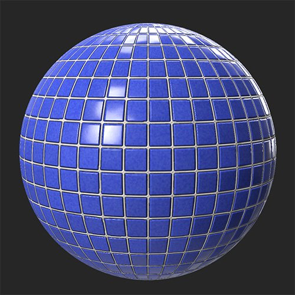
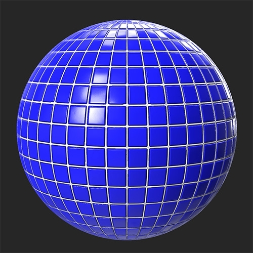

In: Adjustments
As the name suggests, the Brightness/Contrast filter allows you to adjust the brightness and contrast of your material. It's important to note that you can use the Brightness/Contrast filter to target specific channels. For example, you can increase the contrast of the roughness channel, or the brightness of the emissive channel.
In the images below, the Brightness/Contrast filter has been used to increase the brightness and contrast of a tile material.


Basic parameters
Mask